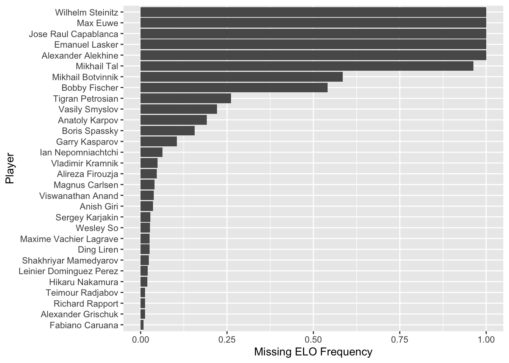
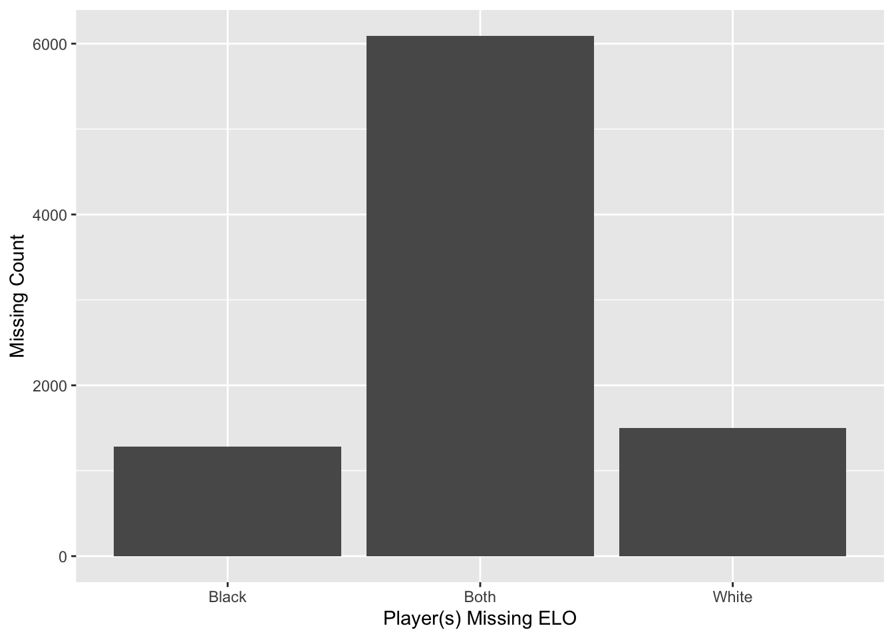

Chapter 3 Data
3.1 Sources
We collected all of our data from the chess.com game database. Where exactly all of this site acquired its data is a difficult paper trail to follow.
Organized chess games have been recorded for a long time, long before the internet or the Turing machine had even been concieved. One common instance is that originally, players in an event would write down the game in terms of moves on a slip of paper, provide it to the tournament organizer, and then that organizer would store that in some other public record. How exactly chess.com has procured it all doesn’t seem to be specified–and it is also the source of most of our inconsistent or “missing” data. Some of it even predates (or in was ignorance of) the ELO system, one of our selected features.
As for the modern day, many of these games are in fact played on this very platform, giving a much greater coherency, consistency, and volumn to the data. So when modern-day players have far more games and a more consistent track record, that is why.
[Chess.com]((https://www.chess.com) generously provides download buttons for every
page of games found (up to 25 games per page). While there is a download button
for the whole page, there is unfortunately not a download for all pages at once.
So to acquire our whole dataset, we had to scrape each players page (which
arguably is allowed under their robots.txt,
as we are not using the games/search pages, though it does redirect to them…),
and write a parser to conjoin all of the data per player. Both the scraper and
parser were written in Python.
As chess is an everlasting game, and as there have been an unknown number of
players and organizers, there are many, many different features that come and
go from individual records. The primary commonalities are the variables:
Event, White and Black (player colors), WhiteElo and BlackElo,
Result (1-0, 0-1, or 1/2-1/2 for draws), two IDs for chess.com, and of
course the list of moves. All were stored in the format [<name> "<value>"]\n,
except for the most important feature(s), the moves. In the .pgn files the
moves are a separate type off field that is essentially a list; we needed to
parse and break that into individual moves per move number. As a game can be any
number of moves, we broke that up into one move (and one move number) per row,
and selected all of the other features as mentioned, aside from Event and the
ids. For the purposes of our analysis, no other feature was necessary, though an
analysis of time could be interesting. Every .pgn file had 25 games until the
final page per player, and the actual number of pages varied highly by player.
In total, there were 39309 games in our dataset, ranging from ~500 to ~2400
games per player. Additionally, since we’re analyzing the opening moves, and
white always plays first, per player in our analysis we only scraped the games
where they played as white.
Naturally, in a dataset this varied, there were a few problems to be handled by
our parser. One, clocktime per move was occasionally included in the games’ move
area, warping every move from a format like 1. d4 d5 2. c4 e6 ... to
1. d4 {[%clk 0:15:20]} Nf6 {[%clk 0:15:20]} 2. c4 {[%clk 0:15:28]} e6 {[%clk 0:15:29]} ...,
which we had to filter out. Additionally, three games had a result of *
instead of a record. After tracking them down, they were all aborted games that
were treated as draws; they all were played on the internet, as well, though we
aren’t certain as to the precise cause of the aborts.
3.2 Cleaning / transformation
Our cleaning process was all done in the Python parser
pgn_parser.py. It all may as well happened there, since the
parser needed to be equipped to read all of the data files anyway (as it’d crash
otherwise). As such, all of the issues mentioned in 3.1 were handled in this
parser. To tidy the dataset, also used the parser and broke the single field of
moves into one move and one move number per row. As a result, we also introduced
a game_id field, which is not unique per row but is unique per game, and as such
combined with move number every row is uniquely identifiable. We createdone
.csv per player, then a whole conjoined .csv for ease of loading into a
unifying dataframe.
Please note that the cleaned files are gitignored, so pgn_parser.py must be run before using the dataset.
3.3 Missing value analysis
Depending on how you define it, there is an inordinate amount of missing data here–only games that have been recorded could possible be featured, and with modern game playforms modern players will naturally have a much more complete record. However, aside from simply summing the games per era per player, it’s not possible to analyze that. Instead, we are more interested in one other sometimes missing field: the players ELOs.
There are three types of value here that represents missing, 0, ?, and N/A.
In parsing, we set all of those to ?, but there isn’t much more we can do to
resolve them. Some games took place before ELO was introduced, others were human
error or simply deemed unimportant, and since ELO is a constantly shifting
calculation, there’s no way to perfectly recreate the number. However, the
players do always have an ELO, and between the three types of missing,
it seems to be by convention and not by any deeper meaning. Therefore, we simply
count the number of missing by player.

As expected, the players with the most (and sometimes complete) missing ELO values are the earlier champions, many of whom were active before the advent of the ELO system, while the players with the least missing are all active in the modern, electronically recorded era.
Another point of interest: of the games that have one or more errors, within the records, what is the distribution of white-to-black missing ELOs?

So even though–since they are world champions, or less commonly grandmasters– the white player is somewhat more commonly the one missing ELO. Of course, it is unsurprisingly most common that both miss their ELO, again indicating records that didn’t notate ELO, or simply predated its use.